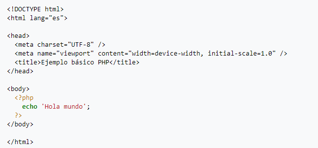
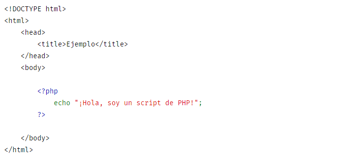
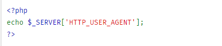
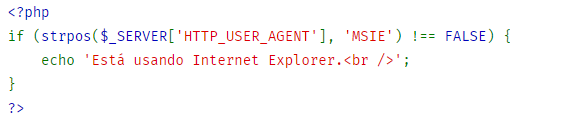
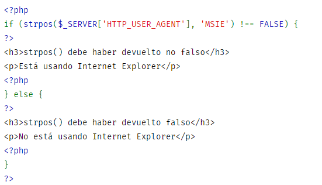
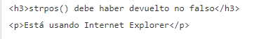

PHP (acrónimo recursivo de PHP: Hypertext Preprocessor) es un lenguaje de código abierto muy
popular
especialmente adecuado para el desarrollo web y que puede ser incrustado en HTML.
Bien, pero ¿qué significa realmente? Un ejemplo nos aclarará las cosas:
Hola Mundo

Este programa es extremadamente simple y realmente no es necesario utilizar PHP para crear una página como
esta. Lo único que muestra es: Hola mundo empleando la sentencia echo de PHP. Observe que el fichero no
necesita
ser ejecutable o especial de ninguna forma. El servidor reconoce que este fichero necesita ser interpretado
por
PHP debido al empleo de la extensión ".php", ya que el servidor está configurado para enviarlo a PHP. Piense
como si fuera un fichero HTML normal que tiene una serie de etiquetas especiales disponibles con las que
puede
hacer muchas cosas interesantes.
Otro ejemplo muy claro

Lo que distingue a PHP de algo del lado del cliente como Javascript es que el código es ejecutado en el
servidor, generando HTML y enviándolo al cliente. El cliente recibirá el resultado de ejecutar el script,
aunque
no se sabrá el código subyacente que era. El servidor web puede ser configurado incluso para que procese
todos
los ficheros HTML con PHP, por lo que no hay manera de que los usuarios puedan saber qué se tiene debajo de
la
manga.
Caracteristicas
Orientado al desarrollo de aplicaciones web dinámicas con acceso a información almacenada en una base de
datos.
Es considerado un lenguaje fácil de aprender, ya que en su desarrollo se simplificaron distintas
especificaciones, como es el caso de la definición de las variables primitivas, ejemplo que se hace evidente
en
el uso de php arrays.
El código fuente escrito en PHP es invisible al navegador web y al cliente, ya que es el servidor el que se
encarga de ejecutar el código y enviar su resultado HTML al navegador.
Capacidad de conexión con la mayoría de los motores de base de datos que se utilizan en la actualidad,
destaca
su conectividad con MySQL y PostgreSQL.
Capacidad de expandir su potencial utilizando módulos (llamados extensiones).
Posee una amplia documentación en su sitio web oficial, entre la cual se destaca que todas las funciones del
sistema están explicadas y ejemplificadas en un único archivo de ayuda.
Es libre, por lo que se presenta como una alternativa de fácil acceso para todos.
Permite aplicar técnicas de programación orientada a objetos.
No requiere definición de tipos de variables aunque sus variables se pueden evaluar también por el tipo que
estén manejando en tiempo de ejecución.
Tiene manejo de excepciones (desde PHP5).
Si bien PHP no obliga a quien lo usa a seguir una determinada metodología a la hora de programar, aun
haciéndolo, el programador puede aplicar en su trabajo cualquier técnica de programación o de desarrollo que
le
permita escribir código ordenado, estructurado y manejable. Un ejemplo de esto son los desarrollos que en
PHP se
han hecho del patrón de diseño Modelo Vista Controlador (MVC), que permiten separar el tratamiento y acceso
a
los datos, la lógica de control y la interfaz de usuario en tres componentes independientes.
Debido a su flexibilidad ha tenido una gran acogida como lenguaje base para las aplicaciones WEB de manejo
de
contenido, y es su uso principal.
Algo util
Hagamos ahora algo que puede ser más útil. Vamos a comprobar qué tipo de navegador está utilizando el
usuario
visitante. Para hacerlo, vamos a comprobar el string del agente de usuario que el navegador envía como parte
de
la petición HTTP. Esta información es almacenada en una variable. En PHP, las variables siempre comienzan
con un
signo de dólar. La variable que nos interesa ahora es $_SERVER['HTTP_USER_AGENT'].
Nota
$_SERVER es una variable especial reservada por PHP que contiene toda la información del
servidor web. Es conocida como una superglobal. Consulte la página del manual sobre Superglobales para más
información. Estas variables especiales fueron introducidas en la versión » 4.1.0 de PHP. Antes se podían
usar
en su lugar los antiguos arrays $HTTP_*_VARS, tales como
$HTTP_SERVER_VARS.
A partir de PHP 5.4.0, estos antiguos arrays han sido eliminados. (Véase también la nota sobre código
antiguo).
Para mostrar esta variable, se puede hacer simplemente:
Ejemplo #1 Imprimir una variable (elemento de array)

Ejemplo #2 Ejemplo usando estructuras de control y funciones

Ejemplo #3 Mezcla de los modos HTML y PHP

Un ejemplo del resultado del script podría ser:
